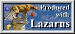
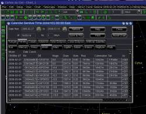
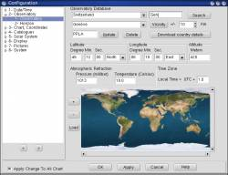

 The main change for this new version is purely technical: we now use the Lazarus / FreePascal compiler to develop the software.
In the short term this must not make any difference to run the program but in the future this open the way to run nativelly on more platform as FreeBSD or Mac OS X.
Also the software is now free from end to end.
 Use Gtk on Linux
The main visible change is for Linux user: we now use Gtk instead of the Borland modified Qt.
libborqt is no longer require but you may need to install libgtk+1.2 and libgdk-pixbuf.
It is possible to use Gtk theme to match you display preference or achieve night vision effet.
A good place to browse is http://themes.freshmeat.net/browse/923/
If the software look ugly with too big or too small font this is probably because your system as not set correctly the Gtk1 environment. Installing and setting one of the theme will solve the problem.
A set of different color button is available to better match the theme. The Configuration-Display setting permit to select which one to use for both normal and nightvision mode.
You can create your own set of button. Go to the data/Theme/ directory and copy default/ to a new name. You can now replace every button in the icon_color directory. The source package contain a script to make the monochrome button from the color one.
 Improved observatory database
The observatory selection as been improved by using the sql database.
It is now possible to save the elevation and time zone with the location.
A small world wide database is installed the first time the program is run. Then you can get the whole detail for the country of interest with the “Download country details” button.
You can search a location by name with the Search button or around a place with the Vicinity button.
Other change :
Rise / Set time calculation give now coherent result in the different part of the program. The precision is improved for the Moon and the planets.
Improved list printing from the calendar or object list.
Every configuration panel that request to select some field number as a list of the current field definition at the bottom of the page.
You can directly download the comet and asteroid element to update the database.
The small cursor to adjust the star size in parametric mode from the main tool bar where too difficult to use, they are now removed.
Use the following key combination instead:
{kind=link}
{kind=link}